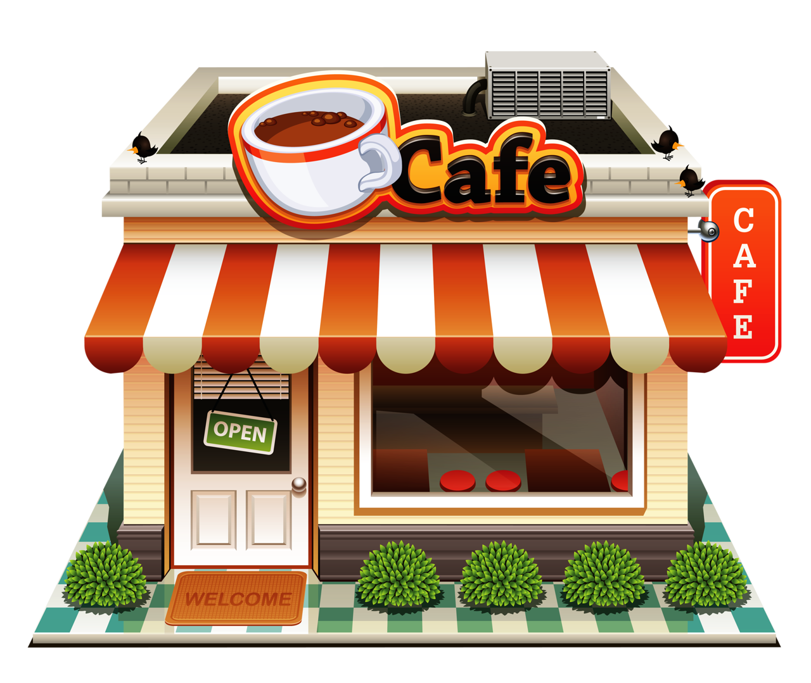

<header class="d-flex justify-content-between align-items-center common-color border border-secondry">
    <div class="cafe-icon overflow-hidden bg-white ">
        
    </div>
     <ul class="nav">
        <li class="nav-item text-white-color fw-bold curser-pointer" routerLink="user-dashboard/home" routerLinkActive="active">
            HOME
        </li>
        <li class="nav-item text-white-color curser-pointer fw-bold ms-3" routerLink="user-dashboard/about" routerLinkActive="active">
            ABOUT
        </li>
        <li class="nav-item text-white-color curser-pointer fw-bold ms-3" routerLink="user-dashboard/contact" routerLinkActive="active">
            CONTACT
        </li>
    </ul>
    <ul class="nav d-flex align-items-center">
        <li class="nav-item icon-sign-in text-white-color curser-pointer fs-4 me-2" (click)="openOverlay()">
        </li>
        <li class="nav-item text-white-color fw-bold me-3 curser-pointer" (click)="openOverlay()">Sign In</li>
        <li class="nav-item text-white-color curser-pointer fs-4 me-4" (click)="toggleThemeIcon()" [ngClass]="isDarkMode ?'icon-sun-fill':'icon-sun-fill'"></li>
    </ul>
</header>               